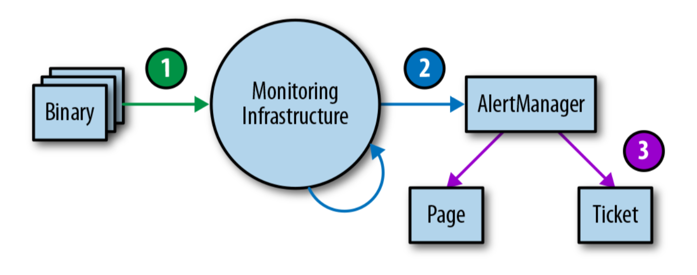

Testing Alerting Logic
报警逻辑测试
In an ideal world, monitoring and alerting code should be subject to the same testing standards as code development. While Prometheus developers are discussing developing unit tests for monitoring, there is currently no broadly adopted system that allows you to do this.
在理想的情况下, 监控和报警的代码应该和代码开发采用相同的测试标准。虽然Prometheus开发者正在讨论开发用于监视的单元测试, 但目前还没有被多数系统采用以允许您这样做。
At Google, we test our monitoring and alerting using a domain-specific language that allows us to create synthetic time series. We then write assertions based upon the values in a derived time series, or the firing status and label presence of specific alerts.
在 Google, 我们使用特定于域的语言测试我们的监视和警报, 允许我们创建合成时间序列。然后, 我们根据派生时间序列中的值或特定警报的触发状态和标签存在来编写断言。
Monitoring and alerting is often a multistage process, which therefore calls for multiple families of unit tests. While this area remains largely underdeveloped, should you want to implement monitoring testing at some point, we recommend a three-tiered approach, as shown in Figure 4-1.
监视和警报通常是一个多级过程, 因此需要多个系列的单元测试。虽然这一领域仍然很不发达, 但如果您希望在某一时刻实施监控测试, 我们建议采用三分层的方法, 如图4-1 所示。
 Figure 4-1. Monitoring testing environment tiers
- Binary reporting: Check that the exported metric variables change in value under certain conditions as expected.
- Monitoring configurations: Make sure that rule evaluation produces expected results, and that specific conditions produce the expected alerts.
- Alerting configurations: Test that generated alerts are routed to a predetermined destination, based on alert label values.
- 二进制报告: 检查导出的度量指标在一定条件下是否按预期值变化。
- 监控配置: 评估确保规则能产生预期的结果, 并且特定的条件会产生预期的报警。
- 报警配置: 测试生成的报警是否根据报警标签值路由到预定的目标。
If you can’t test your monitoring via synthetic means, or there’s a stage of your monitoring you simply can’t test, consider creating a running system that exports well- known metrics, like number of requests and errors. You can use this system to validate derived time series and alerts. It’s very likely that your alerting rules will not fire for months or years after you configure them, and you need to have confidence that when the metric passes a certain threshold, the correct engineers will be alerted with notifications that make sense.
如果您无法通过综合手段测试您的监控, 或者您监控阶段根本无法测试, 请考虑创建一个运行系统, 导出众所周知的度量标准, 比如请求数和错误数量。您可以使用此系统验证派生时间序列和警报。在配置它们后, 您的报警规则很可能不会触发数月或数年, 并且您需要有信心, 当数据点超过某一阈值时, 让对应的工程师收到对应的报警, 使其变得有意义。